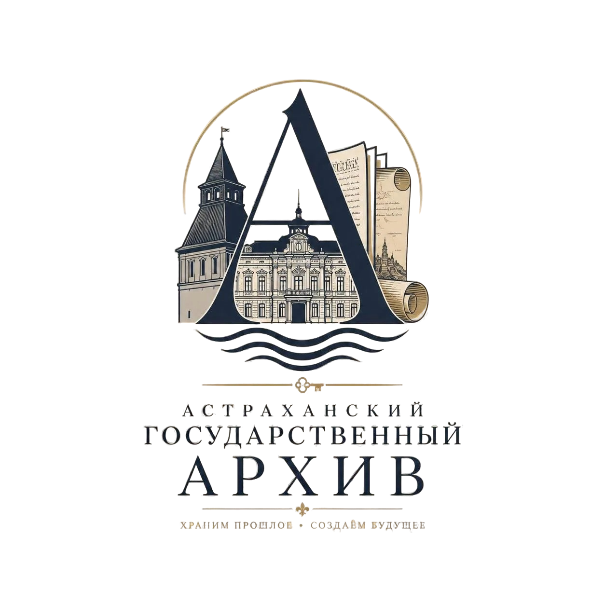
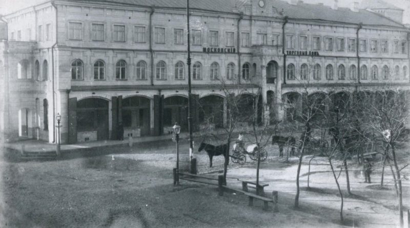

Астраханский Государственный Архив ведёт свою историю с 1918 года. За более чем вековую историю архив стал важнейшим центром хранения документального наследия Астраханской области.
Сегодня архив хранит свыше 1,2 миллиона дел, включая уникальные документы, отражающие историю региона с XVII века до наших дней.
Сохранять документальное наследие, обеспечивать его доступность и использовать для укрепления исторической памяти, развития культуры и образования.

Гарантия подлинности хранимых документов
Сохранность документов в специальных условиях
Открытость для исследователей и граждан
Квалифицированная помощь сотрудников